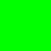

Checking in the neighborhood of a tile after placing it is helpful. But it's even better if we never place bad tiles to begin with. We can do that by keeping track of what tiles are valid in each location. On this page, we'll use a \(3\times 3\) grid for our examples rather than \(10\times 10\), so it will fit the screen better.
We start with every cell being able to have every tile:
First choice
Now we choose a cell and narrow it to a single tile. Let's say we make the center be grass, so that's the only candidate for the center position:
|  | ||
Here's the key insight: once we decide that cell is grass, we've effectively decided that its neighbors aren't water, so we can remove water from the set of possible tiles for the neighbors:
Second choice
Now, if we make the top-left corner be water:
Then its neighbors can't be grass, removing grass from the candidates for those cells:
We've effectively assigned those tiles to be sand because that's the only remaining option, even though we never explicitly decided that.
Third choice
Now suppose we make the opposite corner also be water:
Then that, again, rules out grass for the adjacent cells:
Three choices have fully determined the tiles of 7 cells.
Finishing the map
We can set the remaining cells to any tiles we want — they don't interact. Let's say we make them both grass:
Even though we only made five choices, those five choices determined all nine cells.
|
Previous:
Early checking
|
Next:
Propagating constraints
|